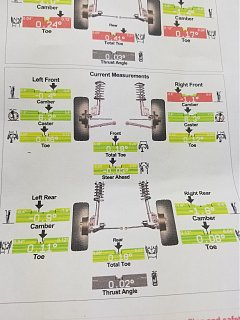

-
Here are the upgrades I have done on the suspension of my 87 2+2: all new parts
Complete poly. Spring seats, bushings etc.
Eibach progressives from MSA.
Tokiko Blues.
Rear cross menber camber welded slots
87 Turbo 24 mm front anti-roll bar.
89 240 SX 22 mm rear anti-roll bar (same as z car).
Front Artwork1 lower ball joint camber/spacer sliding plates.
Q: I get a bit of a bounce in the rear vs. the fronts. Itâs as if the rear end is a bit too hard sprung.
I have poly rear spring seats, should I go back to rubber? Or is this slight bounce common with the Eibach springs? I do have a set of Tokikos. Replace the rear springs?
Any experienced thoughts?
-
I have the exact same set up but with rubber spring seats , and do not notice a rear bounce. It did take some time for the rear to settle in though after the upgradeWho needs new car's, Nissan had it right 30 years ago!!! -
Need the front camber plate, only thing I got left.Who needs new car's, Nissan had it right 30 years ago!!! -
Yea. I got them a few five years back from Artwork1. Theyâre awesome. But they come loose with his bolts had to add lock washers and split tooth washers. Iâll go on a few more thousand miles and see if it settles. Otherwise back to rubber rear seats. Thanks for the info too. BTW, someone who has a mill or CNC access should reproduce them with a few mods. -
Iâve got the eibachs with rubber seats. Mo better1986zxt w/ '86, 56k mile, na engine (turbo bits swapped), K&N intake, 3" CM Performance turbo-back exhaust, Eibachs, KYB shocks, Front Mount Intercooler (2.5" plumbing), Turbosmart MBC/9 lbs, recirculating BOV, ASCO plenum, dual fans, Maxima alt, Champion 3 row Radiator.
2013 Ford Taurus SHO Performance Package

Copyright © 2006–. All rights reserved. Privacy Policy